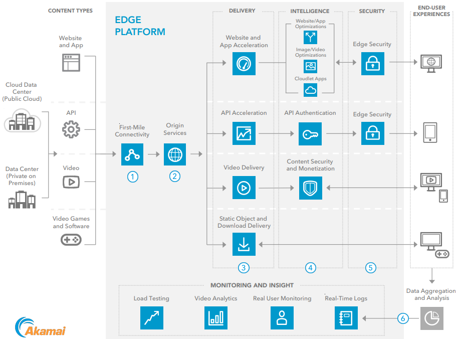

Akamai CDN Service Architecture
Akamai’s CDN ensures fast, reliable, and secure delivery of web content, media, and applications to users globally by leveraging a distributed network of edge servers. It minimizes latency, handles massive traffic spikes, and provides inherent security benefits.
Step-by-Step Process:

- Step 1: Content Provider Uploads Content to Origin Servers
A content provider (e.g., an e-commerce website or streaming service) uploads their website assets (e.g., images, videos, HTML files) to their Origin Servers, which act as the central storage for all original content and the source of truth for the website or app. - Step 2: Content Propagation to Edge Servers
Akamai’s Intelligent Edge Platform, with over 365,000 Edge Servers across 4,100+ points of presence (PoPs) in 135 countries, mirrors the content from the origin servers. This process uses Intelligent Caching, where Akamai’s algorithms predict which content (e.g., popular product images during a sale) will be accessed frequently and store it on edge servers closer to users. The content is either pushed (proactively sent to edge servers) or pulled (fetched when a user requests it) using techniques like predictive prefetching (guessing what users might need next) and demand-based replication (copying content based on user demand). To manage storage efficiently, Akamai implements cache eviction policies such as time-to-live (TTL) settings (removing content after a set expiration time) and least recently used (LRU) policies (evicting less frequently accessed content), ensuring space for new or more relevant data. - Step 3: DNS Mapping and Request Routing with Mapping System
When a user enters a URL (e.g., www.ecommercestore.com) in their browser, their device sends a DNS Query to locate the website. Akamai’s Authoritative DNS System, supported by its Mapping System, resolves this query by mapping the URL to the IP address of the nearest edge server. The Mapping System continuously monitors internet conditions (e.g., latency, packet loss) to ensure accurate routing. The selection of the edge server is based on factors like the user’s geolocation, network conditions, server health, and load, ensuring the user is directed to the optimal server for fast delivery. - Step 4: Edge Server Handles the Request (Caching, Delivery, and Freshness Validation)
The selected Edge Server checks if the requested content is in its cache:
- Cache Hit: If the content (e.g., a product image) is cached, the edge server validates its freshness by checking with the Origin Server using HTTP headers like If-Modified-Since. If the content is still fresh, it delivers it directly to the user, minimizing delay.
- Cache Miss: If the content isn’t cached or is stale, the edge server fetches it from the Origin Server using Intelligent Routing. This routing uses Akamai’s overlay network, which avoids congested internet paths to reduce latency. Once fetched, the content is cached locally on the edge server for future requests, adhering to cache eviction policies.
- Step 5: Dynamic Content Assembly
For dynamic content (e.g., a user’s shopping cart), Akamai uses Edge Side Includes (ESI) to assemble personalized web pages at the edge server. ESI combines static (cached) and dynamic (personalized) parts of a webpage, ensuring fast delivery even for customized content. - Step 6: Content Delivery with Optimization and Security
The edge server delivers the content to the user with minimal latency, capable of handling massive traffic spikes (e.g., during global events like Black Friday sales or the Olympics) due to its distributed architecture. Akamai uses adaptive delivery protocols like HTTP/2 (faster loading with multiplexing), Brotli (efficient compression), and QUIC (reliable UDP-based delivery) to optimize performance across devices and networks. Additionally, Akamai provides basic security features at the edge, such as TLS/SSL termination (encrypting data between the user and edge server) and Secure Token Authentication (ensuring only authorized users access protected content), enhancing the CDN’s inherent security.
All Components:
- Origin Servers: Store the original content uploaded by the provider.
- Intelligent Edge Platform: A network of over 365,000 edge servers in 4,100+ PoPs across 135 countries.
- Edge Servers: Cache and deliver content to users from locations close to them.
- Intelligent Caching: Predicts and stores frequently accessed content on edge servers.
- Predictive Prefetching: Proactively caches content that users are likely to request next.
- Demand-Based Replication: Copies content to edge servers based on user demand.
- Cache Eviction Policies (TTL, LRU): Manages storage by removing outdated or less-used content.
- Authoritative DNS System: Resolves user requests to the nearest edge server.
- Mapping System: Monitors internet conditions to optimize routing.
- Intelligent Routing: Finds the best path between edge servers and origin servers, avoiding congestion.
- Overlay Network: Akamai’s private network for optimized data transfer.
- If-Modified-Since (HTTP Header): Validates content freshness with the Origin Server.
- Edge Side Includes (ESI): Assembles personalized web pages at the edge.
- Adaptive Delivery Protocols (HTTP/2, Brotli, QUIC): Optimize content delivery for speed and compatibility.
- TLS/SSL Termination: Encrypts data between the user and edge server.
- Secure Token Authentication: Ensures authorized access to protected content.